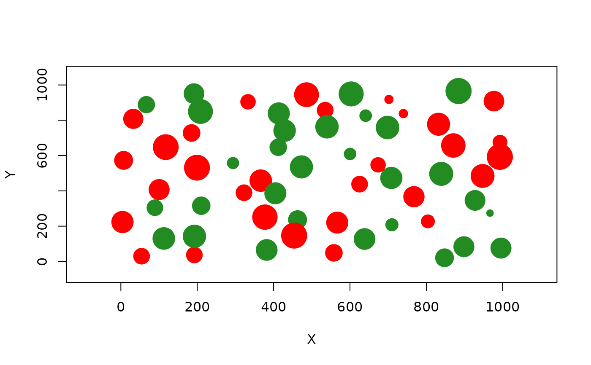

Simulate landscape occupation
species.graph.RdGiven a set of parameters, this function allows to simulate the occupation of an empty landscape, class "metapopulation".
Arguments
- rl
Object of class "landscape".
- method
One of the following (default 'percentage'): click - individually select the patches with occurrence of the species by clicking on the map. Use only for individual landscape simulations. percentage - percentage of the patches to be occupied by the species. number - number of patches to be occupied by the species.
- parm
Parameter to specify the species occurrence - either percentage of occupied patches or number of occupied patches, depending on the method chosen.
- nsew
'N', 'S', 'E', 'W' or none - point of entry of the species in the landscape. By default set to "none".
- plotG
TRUE/FALSE, to show graphic output.
Value
Returns a list, with the following elements:
mapsize - Landscape mosaic side length, in meters.
minimum.distance - Minimum distance between patches centroids, in meters.
mean.area - Mean patch area in hectares.
SD.area - Standard deviation of patches area.
number.patches - Total number of patches.
dispersal - Species mean dispersal ability, in meters.
distance.to.neighbours - Data frame with pairwise distance between patches, in meters.
nodes.characteristics - Data frame with patch (node) information (coordinates, area, radius, cluster, distance to nearest neighbour, ID and species).
An additional field, colour, has only graphical purposes.
Examples
data(rland)
##Creating a 50% occupation in an empty landscape (using the "landscape" dataset):
sp1 <- species.graph(rl=rland, method="percentage", parm=50, nsew="none", plotG=TRUE)
